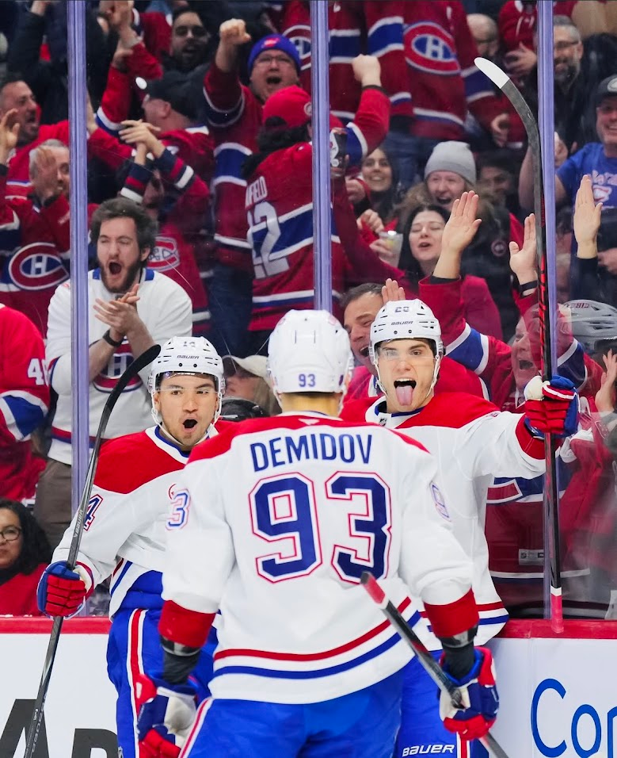
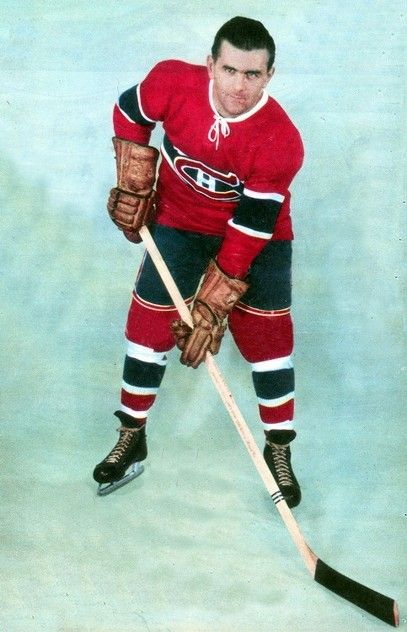
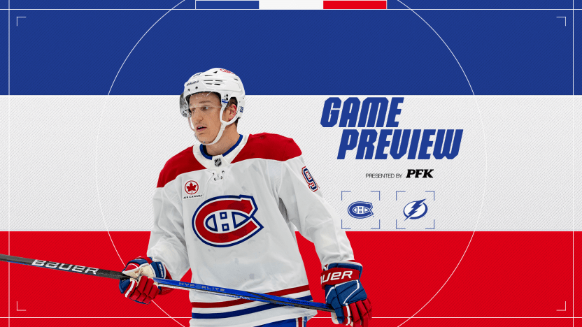
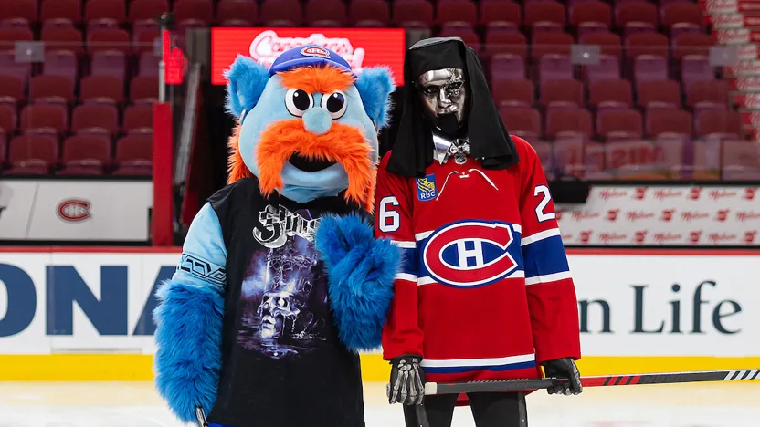
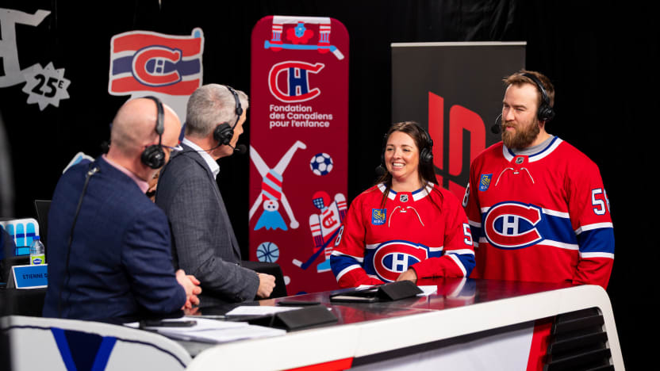

BEM VINDO AO
MONTRÉAL CANADIENS
O Montreal Canadiens é a realeza do hockey. Fundado antes mesmo da criação da NHL, o time é o único sobrevivente da era fundacional a nunca ter deixado de operar. Suas cores azul, branco e vermelho são sagradas em Quebec, e o logotipo "CH" é reconhecido globalmente como o símbolo máximo de excelência no esporte.
A história dos Habs é definida por dinastias que pareciam imbatíveis, especialmente nos anos 50, 60 e 70, quando o time empilhou troféus e produziu lendas que transcendem o gelo. O Bell Centre, sua casa atual, é considerado a "Catedral do Hockey", onde os fantasmas das glórias passadas parecem empurrar o time em cada noite de sábado na famosa Hockey Night in Canada.
Atualmente, o Montreal vive uma das reconstruções mais empolgantes de sua centenária jornada. Sob uma nova filosofia de gestão, o foco mudou para a velocidade, criatividade e o desenvolvimento de uma safra jovem de elite. Com a recente chegada de reforços defensivos de peso, o "Le Bleu-Blanc-Rouge" busca resgatar o orgulho da maior torcida do mundo e trazer a 25ª taça de volta para casa.
CONHEÇA OS
JOGADORES

Maurice "Rocket" Richard
Ala Direita
1942–1960
AGENDA
28
29
31
2
4
5
NOTÍCIAS

MTL@TBL: O que você precisa saber
Montreal coloca em risco sua sequência de cinco vitórias consecutivas em confronto divisional com Tampa Bay.

METAL! estrela novo vídeo da turnê Ghost
O mascote não oficial dos Canadiens idealiza um dia com um Fantasma Sem Nome.

A Fundação Infantil do Montreal Canadiens arrecadou $358.110 durante a RadioTéléDON.
A 17ª edição do evento estabeleceu um novo recorde, graças à generosidade dos fãs e parceiros do Canadiens.